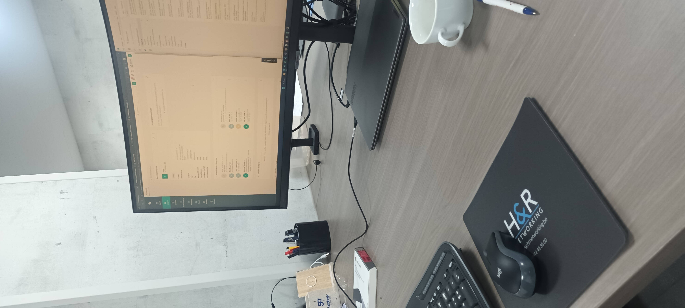

Voormiddag
De dag begon om 8:30u, Ik werd ontvangen door Hilde. Zij startte door me een kleine rondleiding te geven door kantoor en door me wat dingen uit te leggen.
Daarna kwamen Xander en Kevin aan. Na korte kennismaking begonnen zij aan hun werk. Iets later kwam Brend nog aan, met Brend heb ik vandaag heel de dag samengewerkt.
We begonnen aan onze eerste klus, met behulp van teamviewer hebben we een nieuwe laptop gebruiksklaar gemaakt en voorzien van het Office 365 pakket voor een nieuwe werknemer van Fingo in Tesenderlo.
Ook moesten we zorgen voor een digitale handtekening voor haar. Na enige tijd sukkelen zijn we er in geslaagd om dit te laten werken.
Meteen daarna begonnen we met het overzetten van data van een verouderde laptop voor een andere klant. De data van de laptop (die nog op windows 7 liep) hebben we overgezet naar een nieuwe laptop.
Om 12:10u hebben we middagpauze genomen tot 12:45u.
Nammidag
Onze pauze zat er nog maar net op en we werden meteen belast met het volgende telefoontje, wederom door iemand van Fingo.
Dit keer waren het problemen met de printers. De internet verbinding was er erg slecht waardoor een ook slechte verbinding was met de printers.
Toen we een testdruk naar de printer stuurde werd deze verwijderd. Daarna hebben we de printer uit de lijst verwijderd en via de server "gerunned". De printer werkte nu veel beter, maar hiermee waren de problemen niet opgelost.
Doordat we de printer hadden verwijderd en opnieuw hadden toegevoegd kreeg deze een nieuwe naam. Hierdoor werd hij niet meer herkent in de software. Om dit probleem op te lossen hebben we contact moeten opnemen met een van de medewerkers van de software,
samen met hem hebben we er stap voor stap voor gezorgd dat de printer het weer deed.
Toen dat probleem opgelost was, gingen we terug verder met de nieuwe laptop. Deze hebben we ook nog voorzien van een antivirus software via het portaal N-Able
Daarna hebben we nog enkele kleine telefoontjes gehad over problemen die vrij snel opgelost waren.
We zijn geeindigd met het scannen van een laptop op virussen nadat we telefoon kregen van een klant die last had van "rare dingen" op zijn computer. Wat de scan heeft opgeleverd weet ik jammer genoeg nog niet omdat voor mij de werkdag er opzat.
